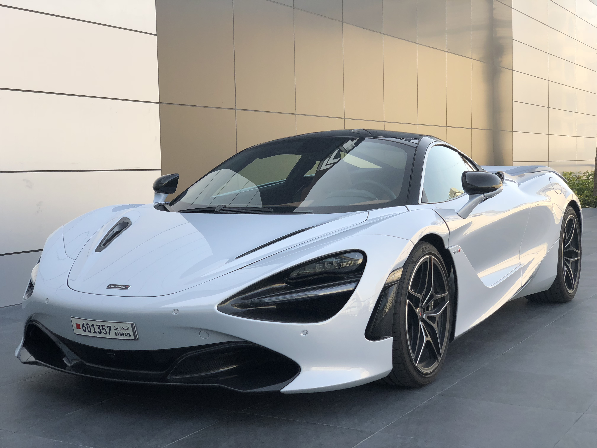

El McLaren 720S es un superdeportivo, fabricado por McLaren desde 2018. Inaugura la segunda generación de la gama Super Series de McLaren Automotive, haciendo efectivo el relevo generacional del McLaren MP4-12C, que posteriormente se conoció como McLaren 12C -a secas- y que fue actualizado más adelante para conocerse como McLaren 650S. El McLaren 720S es un deportivo completamente nuevo, con una nueva plataforma e importantes mejoras aerodinámicas y tecnológicas con respecto a sus predecesores. Se trata de la gama más deportiva de McLaren Automotive, con permiso de un McLaren P1 que se produjo en series limitadas y de un nuevo superdeportivo, aún más potente y exclusivo, que ha sido anunciado como el sucesor del McLaren F1.
En cuanto a las características más destacables del McLaren 720S no podemos olvidarnos de su aerodinámica. McLaren ha trabajado mucho para conseguir un deportivo con un rendimiento aerodinámico excelente y también para refrigerar su motor central - situado inmediatamente detrás del habitáculo. Así las cosas, el McLaren 720S prescinde de entradas de aire en las aletas traseras, pero sí ha conseguido refrigerar el motor con unas entradas de aire que se basan en unos canales por los que fluye el aire hasta la trasera.
Para aquellos a los que el Mercedes-AMG GT R les supo a poco, el fabricante de Affalterbach nos presenta el Mercedes-AMG GT R PRO. Hablamos de una revisión del GT R que viene apoyada por importantes cambios en su puesta a punto para marcar un nuevo mejor tiempo el circuito de Nürburgring. Fabricado en edición especial y fuertemente influenciado por los Mercedes-AMG GT. que corren en GT3 y GT4, este es el coche de circuito definitivo según Mercedes-AMG.
Finalmente el Mercedes-AMG GT R PRO no es la esperada versión hipervitaminada que tanto se había rumoreado y parece que AMG aún tardará en presentar dicha variante. Así, el Mercedes-AMG GT R PRO es la respuesta de AMG a todos aquellos que pedían a la marca una revisión del GT R para abusar del circuito. AMG mantiene intacto el grupo motopropulsor, conservando el 4.0 V8 Twin-Turbo de 585 CV e incluso ofreciendo las mismas prestaciones que GT R del que deriva: 3,6 segundos para el 0-100 Km/h y 318 Km/h de velocidad punta.
¿Cómo podría un Lamborghini acabar con todos los estereotipos que se le pudieran atribuir a sus coches? Lamborghini, como no podía ser menos, tiene una gran reputación en lo que respecta a su valía como fabricante de deportivos. Pero ya fuera por la falta de un legado en competición, o por haber puesto el foco demasiado en aspectos como el diseño, en ocasiones podríamos tener la impresión de que marcas como Ferrari han sabido jugar mejor sus cartas para hacer que sus deportivos se convirtieran en el verdadero sinónimo de deportividad. Pues bien, he aquí el Lamborghini Huracán Performante, el Lamborghini Huracán más bestia y radical, con un V10 atmosférico de 640 CV de potencia y uno de los deportivos más rápidos y eficaces del mercado. Tanto como para conseguir el récord en Nürburgring marcando un tiempo de 6 minutos y 52,01 segundos.
Basta con subirse y ponerlo en marcha para darse cuenta de que el Performante es diferente de todos los demás Huracán porque ha sido diseñado con un único objetivo: ser el más rápido. El coche ha sido rediseñado a 360°, mejorando el motor, haciendo más eficaces la dirección y las suspensiones, utilizando materiales ultraligeros e introduciendo un innovador sistema de aerodinámica activa para elevar el nivel de las prestaciones y las emociones de conducción.
El Ford GT es una marca en sí mismo, un modelo histórico para Ford. El original, el Ford GT40, fue creado en los años sesenta para desbancar a los Ferrari en las 24 Horas de Le Mans. Y lo consiguió en una épica carrera en la que los Ford GT40 se impondrían con autoridad, coparían las tres primeras posiciones y cruzarían la bandera a cuadros juntos en una de las imágenes históricas más conocidas de la historia del automovilismo
Se trata de un superdeportivo que recupera algunas señas de identidad del histórico Ford GT, sin desmerecer una gran dotación tecnológica que comprenderá avanzadas soluciones aerodinámicas activas y una construcción ultraligera, en fibra de carbono y aluminio. El nuevo Ford GT tratará de competir con los mejores superdeportivos del mercado, con marcas como Ferrari, Lamborghini y McLaren.
Uno de los elementos más llamativos del nuevo Ford GT es que siempre ha conservado la estética racing con la que contaba el modelo original. Al contrario de lo que sucede en muchos casos, es la viva imagen de un coche de carreras convertido en un turismo. Y esto es algo con lo que muchos de sus rivales no pueden competir.
El diseño de la nueva generación del Ford GT sigue siendo fiel a ese estilo tan característico, solo que en esta ocasión se ha llevado a un nuevo límite para lograr un automóvil todavía más deportivo y con una presencia agresiva y que infunde temor.
El Ferrari LaFerrari (también conocido por su nombre de proyecto, F150 o F70) es un automóvil superdeportivo híbrido de edición limitada del fabricante italiano Ferrari. El automóvil y su nombre definitivo fueron revelados oficialmente en el Salón del Automóvil de Ginebra de 2013. Es el sucesor del Ferrari Enzo, y se fabricaron 499 unidades del modelo; su precio inicial es de 2 millones de dólares.
El Ferrari LaFerrari es un superdeportivo de muy altas prestaciones, está situado en lo más alto de la gama de Ferrari, por encima de modelos como el Ferrari 488 GTB o el Ferrari 812 Superfast.
Al igual que el McLaren P1 y otros superdeportivos el Ferrari LaFerrari cuenta con un chasis monocasco de fibra de carbono. Este chasis es un 27% más rígido y un 20% más ligero que el empleado en el Ferrari Enzo. Su peso es de 1.255 kg y su reparto de pesos pasa por un 59% del peso emplazado sobre el eje posterior y un 41% sobre el tren delantero.